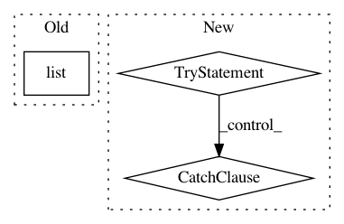

13a6c833ad442187799ee9d556f3c5270b712fc6,pgmpy/models/MarkovModel.py,MarkovModel,get_local_independecies,#MarkovModel#,257
Before Change
for node in self.nodes():
markov_blanket = set(self.markov_blanket(node))
rest = all_vars - set([node]) - markov_blanket
print(list(markov_blanket), list(rest))
local_independencies.add_assertions([node, list(rest), list(markov_blanket)])
local_independencies.reduce()
After Change
for node in self.nodes():
markov_blanket = set(self.markov_blanket(node))
rest = all_vars - set([node]) - markov_blanket
try:
local_independencies.add_assertions([node, list(rest), list(markov_blanket)])
except RequiredError:
pass
local_independencies.reduce()
if latex:
return local_independencies.latex_string()
In pattern: SUPERPATTERN
Frequency: 3
Non-data size: 3
Instances
Project Name: pgmpy/pgmpy
Commit Name: 13a6c833ad442187799ee9d556f3c5270b712fc6
Time: 2014-12-02
Author: abinash.panda.ece10@itbhu.ac.in
File Name: pgmpy/models/MarkovModel.py
Class Name: MarkovModel
Method Name: get_local_independecies
Project Name: facebookresearch/pytext
Commit Name: 900b9a7f2884aaf419e62508be7497b0ad3e1f62
Time: 2021-02-24
Author: debo@fb.com
File Name: pytext/metric_reporters/squad_metric_reporter.py
Class Name: SquadMetricReporter
Method Name: _unnumberize
Project Name: nerox8664/pytorch2keras
Commit Name: 5101a0fe2a89683ea3df8cb896610aaa3da04fb1
Time: 2019-01-01
Author: nerox8664@gmail.com
File Name: pytorch2keras/converter.py
Class Name:
Method Name: pytorch_to_keras